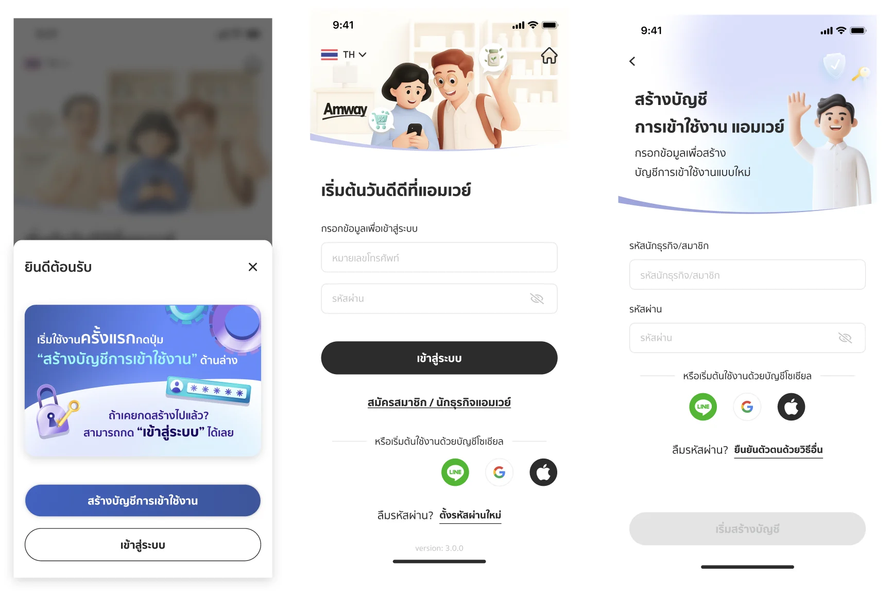
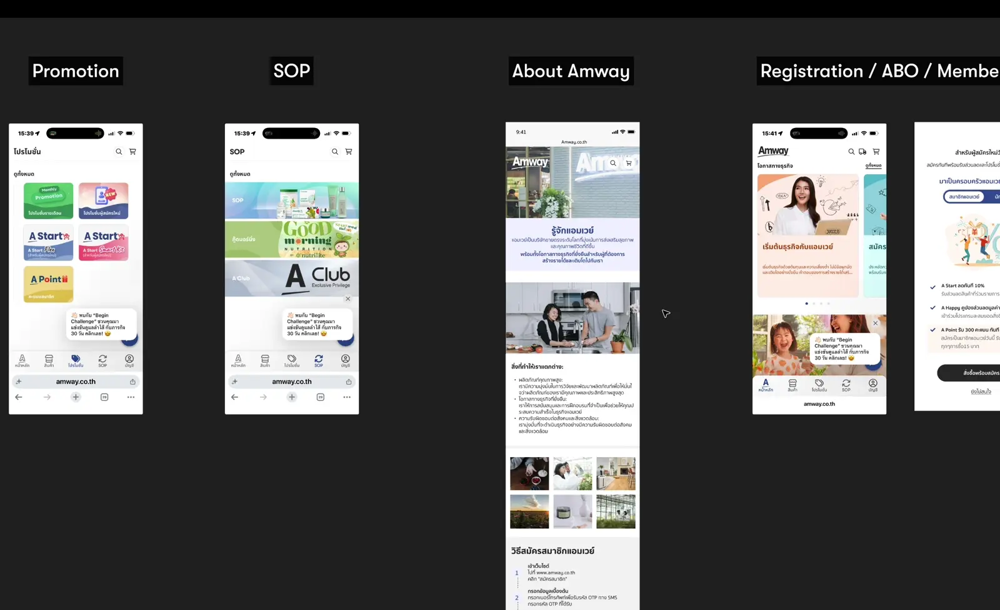
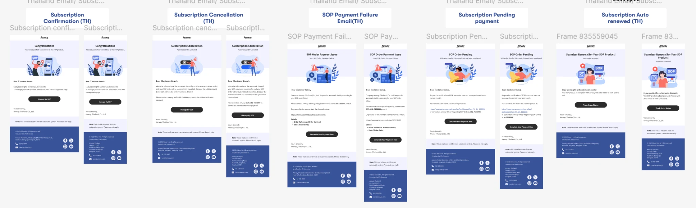

01
BUSSARIN GRAINOK · BANGKOK, THAILAND
Thoughtful design.
Useful products.
I’m a senior product & UX/UI designer turning complex journeys into clear digital experiences.
15+ yearsDigital design across travel,
e-commerce, and enterprise.
e-commerce, and enterprise.
Design with curiosity.Build with care.
Product designDesign systemsResearch & prototypingDesign to delivery
01 / SELECTED WORK
Real journeys.
Considered solutions.
Commerce journeys, transactional emails, application experiences and travel products — a selection of my design work.

Explore visual designUI DESIGN · AI-ASSISTED VISUALS
AI-assisted 3D & UI Design
Creative direction, characters and icons — from faster visual exploration to purposeful application UI.
B2B TRAVEL · WEB APPLICATION
Helping travel agents build tailored itineraries.
TRAVEL · RESPONSIVE WEB
A brand experience built for digital journeys.
TRAVEL · MOBILE APPLICATION
Putting a traveler’s itinerary in their hands.

Explore case studyE-COMMERCE · PRODUCT DESIGN
Website NextGen
Global collaboration, user research, flows, components and usability testing with staff and ABOs.

Explore case studyEMAIL DESIGN · DESKTOP & MOBILE
NextGen Email Design
Thailand layouts, typography and transactional illustrations with the Global NextGen team.
MOTION DESIGN · APPLICATION UI
Small moments.
More personality.
Animation studies that bring celebration, feedback and a little delight into the application experience.
A QUEST · ACHIEVEMENT
A moment worth celebrating.
A badge and confetti animation brings personality to an achievement screen and highlights the user’s progress.
Open videoCOMMERCE · EMPTY CART
A friendlier empty state.
A short shopping bag motion study adds character to the empty cart, alongside a clear invitation to browse products.
Open videoA QUEST · UI ANIMATION
Celebrate a completed mission.
An animated achievement reveal combines a dimensional badge, confetti and reward messaging in the A Quest application.
Open videoA QUEST · UI ANIMATION
Bring the dashboard to life.
A Quest dashboard motion study brings visual feedback to streaks, progress and collectible rewards.
Open video02 / ABOUT ME
A designer who
understands
the build.
I connect user needs, business requirements, and the details that make a product work.
My experience spans e-commerce at Amway Thailand, enterprise applications at the Stock Exchange of Thailand, and travel products at EXO Travel. I work from research and user flows through Figma prototypes, reusable components, and design QA.
With a background in HTML, CSS, and JavaScript, I’m comfortable working closely with developers to bring designs to life.
FigmaAI-assisted visual designDesign systemsUsability testingUX writingHTML / CSS / JavaScriptDeveloper handoff
Download my resume03 / EXPERIENCE
2021 — 2026
Amway Thailand
Assoc UI/UX Designer / Assistant Manager
2020 — 2021
Stock Exchange of Thailand
UX/UI Designer
2012 — 2020
EXO Travel
Senior Web Designer